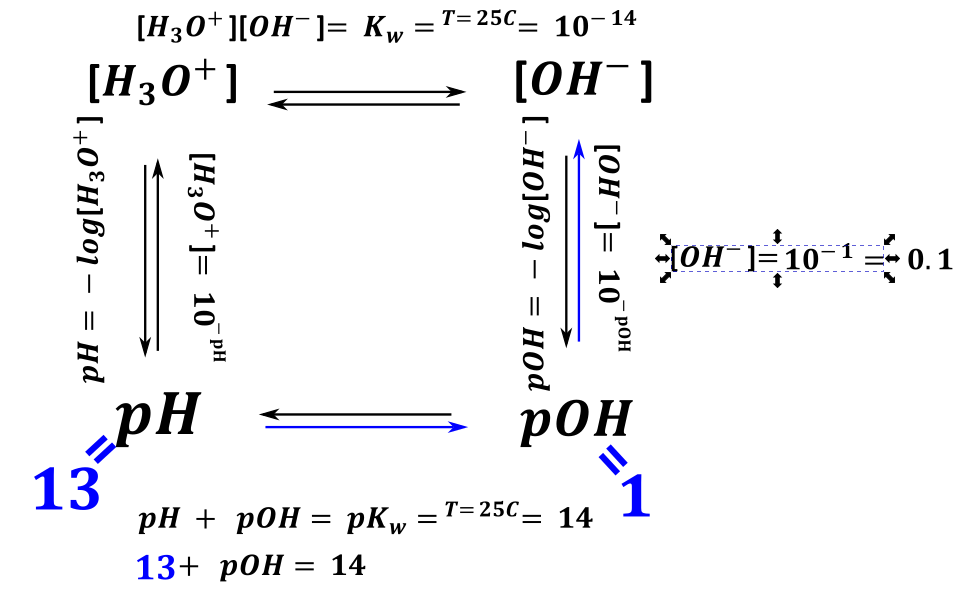

Podział kwasów i zasad na słabe i mocne.
Mocne kwasy to takie, o których możemy powiedzieć, dysocjują (prawie) całkowicie, to znaczy rozpadają się na jony całkowicie, więc ilość moli jonów H+ będzie taka jak użytego kwasu \(n_{H^{+}} = n_{HCl}^{0}\). Oczywiście jak jest kwas dwuprotonowy H2SO4 ilość moli jonów H+ będzie dwukrotnością użytego kwasu:
\[n_{H^{+}} = 2n_{H_{2}SO_{4}}^{0}\]
Stała dysocjacji kwasowej silnych kwasów musi być większa od jednego Ka>1
Kwas słaby ma stałą dysocjacji w zakresie: 1>Ka>10-14.Kwasy słabe dysocjują odwracalnie, ustala się stan równowagi pomiędzy formą niezdysocjowaną – wyjściowym kwasem, zdysocjowaną kwasu czyli pozbawioną protonu oraz jonami H3O+/H+. Na przykład dla reakcji
\[HF < - \rightarrow H^{+} + F^{-}\]
Stała równowagi dysocjacji kwasowej ma postać:
\[K_{a}^{HF} = \frac{\left\lbrack H^{+} \right\rbrack\left\lbrack F^{-} \right\rbrack}{\lbrack HF\rbrack}\]
Dalsze obliczenia wykorzystujące tę stałą równowagi możemy traktować jak obliczenia z ogólnej stałej równowagi, wykorzystując tabelki czy regułę przekory. Dla typowych układów tego typu można wyprowadzić wzory uzależniające stężenie jonów H+ w zależności od stężenia początkowego, ale o tym dalej.
Jeżeli stała dysocjacji kwasowej danego związku jest mniejsza od Ka<10-14 to w wodzie nie zachowuje się jak kwas, nie dysocjuje. Przykładem jest etanol. Czysta wódka kwaśna nie jest (o ile nie jest to jakiś wynalazek typu cytrynówka) gdyż stała dysocjacji kwasowej Ka=1.81⋅10-16 ,a więc jest mniejsza od 10-14
Analogicznie rozpatrujemy moc zasad, w tym wypadku zasady dysocjują lub hydrolizują (reagują z wodą) z utworzeniem jonów OH-. Porównujemy natomiast stałą dysocjacji zasadowej Kb
Z zasad nieorganicznych należy wymienić wodorotlenki pierwszej grupy oraz Ba(OH)2. Reszta wodorotlenków metali drugiej grupy drugiej jest średnio rozpuszczalna, co powoduje komplikacje w obliczeniach, jeżeli wodorotlenek taki ma stężenie, iż rozpuścił się w całości można uznać go za mocną zasadę (wyjątkiem jest Be(OH)2, który jest wodorotlenkiem amfoterycznym).
Słabe zasady, to te które mają stałą dysocjacji zasadowej w zakresie 1>Kb>10-14, np. taki amoniak:
\[NH_{3} + H_{2}O < - \rightarrow NH_{4}^{+} + OH^{-}\]
Tę równowagę opisuje Kb:
\[K_{b} = \frac{\left\lbrack NH_{4}^{+} \right\rbrack\left\lbrack OH^{-} \right\rbrack}{\left\lbrack NH_{3} \right\rbrack}\]
I analogicznie związki o stałej dysocjacji mniejszej niż 10-14 nie są zasadami w wodzie.
OGÓLNIE ZADANIA NA pH RÓB NA JONACH. NA CZĄSTECZKACH JEST SIĘ BARDZO ŁATWO O BŁĄD.
Czyli najpierw (dla silnych elektrolitów, silnych kwasów i zasad) należy zdysocjować (rozbić) wszystko na jony, a potem rozważamy reakcje na jonach.
Typ zadań z matur:
Zmieszano mocny kwas i mocną zasadę.
Bardzo często jest napisana reakcja zobojętnienia czyli reakcja pomiędzy kwasem i zasadą albo pomiędzy jonami \(H^{+}\text{/}H_{3}O^{+}\ i\ OH^{-}\) jakbyśmy byli głupi.
Zadania takie zawsze rozwiązujemy w sposób proceduralny:
- jeżeli nie podano to zapisz zachodzące reakcje
- oblicz lub uzależnij od wielkości szukanej mole \(H^{+}\) i \(OH^{-}\);
- zrób tabelkę dotyczącą reakcji pomiędzy tymi jonami, rozpatrz co reaguje do praktycznie końca,
- napisz wyrażenie na stężenie jonów \(H^{+}\) lub \(OH^{-}\) na końcu (tego którego jest więcej)
- oblicz końcowe stężenie jonów \(H^{+}\) lub \(OH^{-}\)
OGÓLNIE ZADANIA NA pH RÓB NA JONACH. NA CZĄSTECZKACH JEST SIĘ BARDZO ŁATWO O BŁĄD..
Czyli najpierw (dla silnych elektrolitów, silnych kwasów i zasad) należy zdysocjować (rozbić) wszystko na jony, a potem rozważamy reakcje na jonach.
Rozważmy kilka zadań maturalnych:
Zmieszano \(100cm^{3}\) wodnego roztworu \(Ba(OH)_{2}\) o stężeniu 0.2 \({mol \bullet dm}^{3}\) z 40 \(cm^{3}\) wodnego roztworu \(HCl\) o stężeniu \(0.8\ mol \bullet dm^{- 3}\). W mieszaninie przebiegła reakcja opisana poniższym równaniem:
\[H_{3}O^{+} + OH^{-} \rightarrow 2H_{2}O\]
Oblicz pH powstałego roztworu w temperaturze 25°C. W obliczeniach przyjmij, że objętość tego roztworu jest sumą objętości roztworów \(Ba(OH)_{2}\) i \(HCl\). Wynik końcowy zaokrąglij do drugiego miejsca po przecinku.
Najpierw rozpisujesz dysocjację obu początkowych związków. Jak wiemy \(Ba(OH)_{2}\) to silna zasada, natomiast \(HCl\) to silny kwas, oba związki dysocjują całkowicie w myśl reakcji:
\[Ba(OH)_{2} \rightarrow Ba^{2 +} + 2OH^{-}\]
\[HCl + H_{2}O \rightarrow H_{3}O^{+} + Cl^{-}\]
Kolejno obliczamy ilość moli jonów \(OH^{-}\) i \(H^{+}\)
\[n_{Ba(OH)_{2}} = 0.1*0.2 = 0.02 \rightarrow n_{OH^{-}} = 0.02*2 = 0.04\]
\[n_{HCl} = 0.032 \rightarrow n_{H^{+}\text{/}H_{3}O^{+}} = 0.032\]
Kolejno uzupełniamy tabelkę reakcji pomiędzy tymi jonami:
\[H^{+} + OH^{-} \rightarrow H_{2}O\]
Widzimy, że w tym wypadku jony \(H^{+}\) są w niedomiarze, a więc one przereagują całkowicie, zostaną nieprzereagowane całkowicie jony \(OH^{-}\):
| \[H^{+}\] | \[OH^{-}\] | \[H_{2}O\] | |
|---|---|---|---|
| \[n^{0}\] | \[0.032\] | \[0.04\] | W pizdu |
| \[\Delta n\] | \[- x\] | \[- x\] | \[+ x\] |
| \[n^{k}\] | \[0.032 - x = 0 \rightarrow\] \[x = 0.032\] |
\[0.04 - x = 0.04 - 0.032 = 0.008\] | W pizdu +x |
Wyrażeniu na pH i pOH mamy stężenia, więc fajnie byłoby mieć stężenie końcowe jonu, a nie jego mole.
\[\left\lbrack OH^{-} \right\rbrack^{K} = \frac{n_{OH^{-}}}{V_{calk}} = \frac{0.008}{0.1 + 0.04} = 0.0571\]
Z obliczonego stężenia możemy obliczyć stężenie jonów\(OH^{-}\), \(pOH\) i kolejno \(pH\)
\[pOH = - \log\left\lbrack OH^{-} \right\rbrack = 1.243\]
\[pH + pOH = 14\]
\[pH = 14 - 1.243 = 12.757\]
Obecnie na maturze są zadania, które są bardziej skomplikowane matematycznie, utrudnienie polega na tym, iż mamy końcowe \(pH\) i nie posiadamy jednej z początkowych objętości użytych roztworów. Przykładem jest zadanie:
Reakcja kwasu solnego z wodorotlenkiem potasu przebiega zgodnie z równaniem
\[HCl + KOH \rightarrow H_{2}O + KCl\]
Oblicz objętość kwasu solnego o stężeniu 0.1 \(mol \cdot dm^{- 3},\) jaką należy dodać do \(300\ cm^{3}\) wodnego roztworu wodorotlenku potasu o stężeniu 0.2 \(mol \cdot dm^{- 3}\), aby otrzymany roztwór miał \(pH\ = \ 13\). W obliczeniach przyjmij, że objętość powstałego roztworu jest sumą objętości użytych roztworów.
Trudność wobec zadania poprzedniego jest taki, że nie możemy obliczyć początkowej ilości moli \(HCl\).
Korzystając z wskazówek do obliczeń molowych:
Jak nie wiesz co zrobić w zadaniu to oblicz K!@#% mole
Jeżeli w zadaniu szukasz jakiejś wartości to możesz inne wartości potrzebne uzależniać od wartości poszukiwanej i wtedy nie będzie efektu zapętlenia zadania.
Jeżeli w zadaniu masz dane tylko stosunki (efekt dzielenia, np., stężenia, rozpuszczalności czy poprostu zawartości masowe) i nie możesz z niczego obliczyć moli (czyli nie masz moli masy objętości żadnej ) i w zadaniu szukasz stosunku to jedną z wartości molopodobnych (mole masa objętość) możesz założyć, ta która Ci się podoba, ale tylko jedna.
Widzę, iż nie mam w zadaniu podaje początkowej objętości użytego \(HCl\), ale zgodnie z podanym prawem 1. mole tego \(HCl\ \)mogę uzależnić od wartości szukanej, czyli objętości kwasu w zadaniu:
\[n_{KOH} = 0.2*0.3 = 0.06 = n_{OH^{-}}\]
\[n_{HCl} = 0.1V_{HCl} = n_{H^{+}}\]
Posługując się tymi wartościami/ wyrażeniami mogę zrobić tabelkę związaną z reakcją
| \[H^{+}\] | \[OH^{-}\] | \[H_{2}O\] | |
|---|---|---|---|
| \[n^{0}\] | \[0.1V_{HCl}\] | \[0.06\] | |
| \[\Delta n\] | \[- x\] | \[- x\] | |
| \[n^{k}\] | \[0.1V_{HCl} - x\] | \[0.06 - x\] |
Problemem jest ustalenie, który z reagentów \(H^{+}\) czy \(OH^{-}\) pierwszy przereaguje całkowicie, który pierwszy osiągnie wartość 0. Zależy to od użytej objętości kwasu solnego, której nie mamy podanej, ale wiemy, że wartość pH po reakcji wynosi 13, a znaczy to, że odczyn jest zasadowy, a więc można z całą pewnością powiedzieć, iż to \(H^{+}\) spadły do zera praktycznie, a jony \(OH^{-}\) musiały zostać. W związku z umieszczając ten warunek w tabelce
| \[H^{+}\] | \[OH^{-}\] | \[H_{2}O\] | |
|---|---|---|---|
| \[n^{0}\] | \[0.1V_{HCl}\] | \[0.06\] | |
| \[\Delta n\] | \[- x\] | \[- x\] | |
| \[n^{k}\] | \[0.1V_{HCl} - x = 0 \rightarrow\] \[x = 0.1V_{HCl}\] |
\[0.06 - x =\] \[0.06 - 0.1V_{HCl}\] |
Mogę uzależnić wartość \(\mathbf{x}\) od objętości, a potem ilość moli jonów \(OH^{-}\) od objętości.

\[pH = 13 \rightarrow pOH = 14 - 13 = 1 \rightarrow \left\lbrack OH^{-} \right\rbrack = {10^{- pOH} = 10}^{- 1} = \ 0.1\]
Jak wiadomo stężenie jonów jest to ilość moli danego reagenta podzielona przez całkowitą objętość uzyskanego roztworu.
\[\left\lbrack OH^{-} \right\rbrack = \frac{n_{OH^{-}\ }^{koncowe}}{V^{koncowa}}\]
Przy czym objętość muszę wziąć sumaryczną obu roztworów, bo zlewam je razem, zgodnie z treścią zadania jest suma objętości obu roztworów:
\[V_{sum} = 0.3 + V_{HCl}\]
Ilość moli wstawiam z tabelki, gdyż po to ją zrobiłem, aby uzależnić ilość moli jonów \(OH^{-}\)od objętości \(HCl\).
\[\left\lbrack OH^{-} \right\rbrack = \frac{n_{OH^{-}}}{V} = \frac{0.06 - 0.1V_{HCl}}{0.3 + V_{HCl}} = 0.1\]
Dostaje, więc równanie z jedną niewiadomą, wystarczy je rozwiązać:
\[0.06 - 0.1V_{HCl} = 0.03 + 0.1V_{HCl}\]
\[V_{HCl} = \frac{0.03}{0.2} = 0.15dm^{3} = 150cm^{3}\]
Do zlewki wprowadzono \(80\ cm^{3}\ \) roztworu mocnego (całkowicie zdysocjowanego), jednoprotonowego kwasu \(HA\) o stężeniu \(0.10\ mol\ \cdot \ dm^{–3}\). Następnie do zlewki wprowadzono 45 cm3 roztworu wodorotlenku potasu o stężeniu 0.15 mol · dm–3. Do takiej mieszaniny dodawano kroplami roztwór wodorotlenku sodu o stężeniu 0.2 mol · dm–3 do momentu uzyskania roztworu o pH równym 2.1. Oblicz objętość dodanego roztworu wodorotlenku sodu. Przyjmij, że objętość mieszaniny była sumą objętości zmieszanych roztworów.
Obliczam najpierw początkowe liczby moli wszystkich związków. Szukamy objętości \(NaOH\), więc mole \(NaOH\) mogę uzależnić od objętości użytego \(NaOH\).
\[n_{HA} = 0.1*0.08 = 0.008 = n_{H^{+}}\]
\[n_{KOH} = 0.045*0.15 = 0.00675 = n_{OH^{-}}^{KOH}\]
\[n_{NaOH} = 0.2*V_{NaOH} = n_{OH^{-}}^{NaOH}\]
Oczywiście ilość jonów \(H^{+}\) jest równa ilości moli kwasu, natomiast ilość jonów \(OH^{-}\) jest równa sumie \(NaOH\) i \(KOH\) użytego do reakcji
\[n_{OH^{-}} = n_{OH^{-}}^{KOH} + n_{OH^{-}}^{NaOH} = 0.00675 + 0.2*V_{NaOH}\]
Kolejno robię tabelkę związaną z nadmiarem i niedomiarem
\[H^{+} + OH^{-} \rightarrow H_{2}O\]
| \[H^{+}\] | \[OH^{-}\] | \[H_{2}O\] | |
|---|---|---|---|
| \[n^{0}\] | \[0.008\] | \[0.00675 + 0.2*V_{NaOH}\] | dużo |
| \[\Delta n\] | \[- x\] | \[- x\] | \[+ x\] |
| \[n^{k}\] | \[0.008 - x\] | \[0.00675 +\] \[0.2*V_{NaOH} - x\] |
dużo |
Znowu mamy problem z ustaleniem, który z reagentów został użyty w nadmiarze, a który w niedomiarze. O roztworze po reakcji wiem, iż ma on odczyn kwasowy (pH<7), a znaczy to, że zostały jony \(H^{+}\), a więc całkowicie przereagowały jony \(OH^{-}\). Z tego mogę ustalić ile wynosi współrzędna reakcji (\(\mathbf{x}\)), a kolejno uzależnić od tego końcowe mole jonów \(H^{+}\).
| \[H^{+}\] | \[OH^{-}\] | |
|---|---|---|
| \[n^{k}\] | \[0.008 - x =\] \[0.008 - \left( 0.00675 + 0.2*V_{NaOH} \right)\] \[= 0.00125 - 0.2V_{NaOH}\] |
\[0.00675 + 0.2*V_{NaOH} - x = 0\] \[\rightarrow x = 0.00675 + 0.2*V_{NaOH}\] |
Stężenie końcowe jonów \(H^{+}\) mogę z jednej strony obliczyć z podanego pH roztworu końcowego
\[pH = - \log{\lbrack H^{+}\rbrack}\]
\[\left\lbrack H^{+} \right\rbrack = 10^{- pH} = 10^{- 2.1} = 0.00794\]
A z drugiej strony uzależnić od ilości moli końcowych z tabelki i objętości całkowitej roztworu.
\[\left\lbrack H^{+} \right\rbrack_{konc} = \frac{n_{H^{+}}^{konc}}{V_{konc}} = \frac{to\ z\ tabelk}{sumę\ objętości}\]
\[0.00794 = \frac{0.00125 - 0.2V_{NaOH}}{0.08 + 0.045 + V_{NaOH}}\]
Rozwiązanie tego równania daje nam całkowitą objętość \(NaOH\):
\[V_{NaOH} = 0.00124\]
Bardzo podobny typ zadań polega na zadaniach, gdzie zmieszano mocny kwas z mocnym kwasem albo mocną zasadę z mocną zasadą, w tym wypadku nie ma reakcji, a więc nie potrzeba tabelki, ale metodologia rozwiązywania jest praktycznie taka sama.
Zmieszano 500 cm3 wodnego roztworu wodorotlenku sodu o nieznanym stężeniu 𝑐 (roztwór A) i 250 \(cm^{3}\) wodnego roztworu wodorotlenku sodu o stężeniu \(0.10\ mol\ \bullet \ dm^{- 3}\) (roztwór B). W temperaturze 25 °C pH otrzymanego roztworu C wynosiło 12.7. Oblicz stężenie molowe c roztworu A wodorotlenku sodu. Przyjmij, że objętość powstałego roztworu jest sumą objętości użytych roztworów. Wynik podaj z odpowiednią jednostką.
Obliczamy ilość moli NaOH (i tym samym moli jonów \(OH^{-}\)).Dla pierwszego roztworu ilość tę uzależniamy od stężenia, dla drugiego możemy obliczyć dokładną wartość liczbową:
\[n_{NaOH}^{I} = 0.5c\]
\[n_{NaOH}^{II} = cV = 0.025\]
Oczywiście całkowita ilość tych jonów jest sumą obu ilości:
\[n_{sum} = 0.5c + 0.025\]
\[V_{sum} = 0.250 + 0.5\]
Kolejno z końcowej wartości pH możemy obliczyć pOH, a potem dokładną wartość stężenia jonów OH-.
\[pOH = 14 - pH \rightarrow pOH = 1.3 \rightarrow \left\lbrack OH^{-} \right\rbrack = 10^{- 1.3} = 0.0501\]
Stężenie to jest sumaryczną ilością moli jonów podzieloną przez objętość sumaryczną roztworu
\[0.0501 = \frac{0.5c + 0.025}{0.75}\]
Oblicz, w jakim stosunku należy zmieszać roztwór \(Ba(OH)_{2}\) o \(pH = 12\) i \(NaOH\) o \(pH = 14\), aby uzyskać roztwór o \(pH = \ 13\). Załóż, że sumaryczna objętość jest sumą objętości. Temperatura wynosi 25°C
Pytanie jest o stosunek i stężenia to też stosunki, więc w myśl zasady, że „Jeżeli w zadaniu masz dane tylko stosunki (efekt dzielenia, np., stężenia, rozpuszczalności czy poprostu zawartości masowe) i nie możesz z niczego obliczyć moli (czyli nie masz moli masy objętości żadnej ) i w zadaniu szukasz stosunku to jedną z wartości molopodobnych (mole masa objętość) możesz założyć, ta która Ci się podoba, ale tylko jedną.” Należy założyć jedną z wartości, obu w ogóle mieć czym rozpocząć rozwiązywanie zadania.
Dla roztworu początkowego \(Ba(OH)_{2}\) możemy powiedzieć, jakie jest stężenie jonów \(OH^{-}\) \(pOH = 14 - 12 = 2 \rightarrow \left\lbrack OH^{-} \right\rbrack = 10^{- 2} = 0.01\)
To samo możemy zrobić z \(NaOH \rightarrow pOH = 14 - 14 = 0 \rightarrow \left\lbrack OH^{-} \right\rbrack = 10^{0} = 1\)
I z roztworem końcowym \(pOH = pK_{w} - pH = \ 14 - 13 = 1 \rightarrow \left\lbrack OH^{-} \right\rbrack = 10^{- 1} = 0.1\)
Teraz mamy stężenia, fajnie byłby mieć mole więc coś zakładamy. Jakąś objętość
Zakładam objętość \(V_{Ba(OH)_{2}} = 1\ dm^{3}\) (mogę dowolną, mogę również \(NaOH\)) W sumie szukam objętość \(V_{NaOH}\), gdyż będę mógł łatwo wtedy obliczyć stosunek użytych objętości, czyli mogę powiedzieć, że teraz resztę będę uzależniał od tej objętości \(NaOH\)
Z łatwością obliczam ilość moli jonów \(OH^{-}\) w \(Ba(OH)_{2}\)
\[n_{OH^{-}}^{Ba(OH)_{2}} = Vc = 1*0.01 = 0.01\]
Natomiast w NaOH uzależniam od użytej objętości:
\[n_{OH^{-}}^{NaOH} = cV = 1V_{NaOH}\]
Sumaryczna ilość moli jest sumą tych moli
\[n_{OH^{-}}^{sum} = n_{OH^{-}}^{Ba(OH)_{2}} + n_{OH^{-}}^{NaOH} = 0.01 + V_{NaOH}\]
Z kolei objętość sumą objętości:
\[V_{calk} = V_{NaOH} + V_{Ba(OH)_{2}}\]
Co bo wstawieniu do wyrażenia na stężenie całkowite daje mi:
\[\left\lbrack OH^{-} \right\rbrack^{koncowe} = \frac{n_{OH^{-}}^{konc}}{V_{r}^{kons}}\]
\[\left\lbrack OH^{-} \right\rbrack^{koncowe} = \frac{0.01 + 1*V_{NaOH}}{1 + V_{NaOH}} = 0.1\]
\[V_{NaOH} = 0.1\ dm^{3} = 100cm^{3}\]
\[stos\ \ \ \ \ = \frac{V_{Ba(OH)_{2}}}{V_{NaOH}} = \frac{1}{0.1} = 10\]
Analogiczne zadanie może dotyczyć o kwasów: W jakim stosunku objętościowym musisz zmieszać kwas siarkowy o stężeniu 0.1 mol/dm^3 i kwas solny o pH=3 aby uzyskać roztwór o pH=2. Załóż, że kwas siarkowy jest mocnym kwasem dwuprotonowym oraz , że sumaryczna objętość jest sumą użytych objętości. Temperatura wynosi 25°C
\[H_{2}SO_{4} \rightarrow 2H^{+} + SO_{4}^{2 -}\]
\[HCl \rightarrow H^{+} + Cl^{-}\]
Zakładam, że \(V_{H_{2}SO_{4}} = 1dm^{3}\)
\[n_{H_{2}SO_{4}} = 1*0.1 = 0.1 \rightarrow n_{H^{+}} = 0.2\ mol\]
\[pH_{HCl} = 3 \rightarrow \left\lbrack H^{+} \right\rbrack_{HCl} = 10^{- 3}\]
Szukam objętości \(V_{HCl}\), mogę inne rzeczy uzależniać od tej objętości \(HCl\ \)
\[n_{H^{+}}^{HCl} = n_{HCl} = cV = 0.001*V_{HCl}\]
\[n_{H^{+}}^{sum} = n_{H^{+}}^{H_{2}SO_{4}} + n_{H^{+}}^{HCl} = 0.2 + 0.001V_{HCl}\]
\[V_{sum} = 1 + V_{HCl}\]
\[pH = 2 \rightarrow \left\lbrack H^{+} \right\rbrack^{K} = 10^{- 2} = 0.01\]
\[\left\lbrack H^{+} \right\rbrack^{K} = 0.01 = \frac{n_{H^{+}}^{K}}{V_{sum}} = \frac{0.2 + 0.001V_{HCl}}{1 + V_{HCl}}\]
Lub też może dotyczyć reakcji miedzy kwasem i zasadą:
Oblicz, w jakim stosunku objętościowym zmieszano roztwory \(NaOH\ o\ pH = 12.5\) i \(H_{2}SO_{4}\) o stężeniu \(0.04\ mol/dm^{3}\) jeżeli, wiadomow, że pH po tym zmieszaniu wynosiło 12.1.Załóż, że kwas \(H_{2}SO_{4}\) jest silnym kwasem dwuprotonowym, a objętość roztworu po zmieszaniu była sumą objętości. Temperatura wynosi 25°C
\[dla\ NaOH\ pOH = 14 - 12.5 = 1.5 \rightarrow \left\lbrack OH^{-} \right\rbrack = 0.0316\]
\[dla\ H_{2}SO_{4} \rightarrow \left\lbrack H^{+} \right\rbrack = 2*0.04 = 0.08\]
Czylli robię tabelkę, o ile miałbym mole. A moli nie mam.
Również tutaj zakładam jedną z objętości, np.
Zakładamy \(V_{NAOH} = 1\ dm^{3}\) wówczas obliczam mole jonów \(OH^{-}\)
\[n_{OH^{-}} = n_{NaOH} = cV = 0.0316\]
Wtedy szukam \(V_{H_{2}SO_{4}}\) czyli resztę rzeczy będę uzależniał od tej objętości, rozpoczynam od uzależnienia moli:
\[n_{H^{+}} = 2n_{H_{2}SO_{4}} = 2c_{H_{2}SO_{4}}V_{H_{2}SO_{4}} = 0.08V_{H_{2}SO_{4}}\]
I teraz mogę zrobić dopiero tabelkę związaną z zachodzącą reakcją:
\[H^{+} + OH^{-} \rightarrow H_{2}O\]
| \[H^{+}\] | \[OH^{-}\] | \[H_{2}O\] | |
|---|---|---|---|
| \[n^{0}\] | \[0.08V_{H_{2}SO_{4}}\ \] | \[0.0316\] | |
| \[\Delta n\] | \[- x\] | \[- x\] | \[+ x\] |
| \[n^{k}\] | \[0.08V_{H_{2}SO_{4}} - x\] | \[0.0316 - x\] | \[x\] |
Końcowe \(pH\) wynosi\(12.1\), a więc jest zasadowe, czyli jony \(H^{+}\) do musiały przereagować całkowicie:
| \[H^{+}\] | \[OH^{-}\] | |
|---|---|---|
| \[n^{k}\] | \[0.08V_{H_{2}SO_{4}} - x = 0 \rightarrow\] \[x = 0.08V_{H_{2}SO_{4}}\] |
\[0.0316 - x =\] \[0.0316 - 0.08V_{H_{2}SO_{4}}\] |
Kolejno obliczam stężenie jonów \(OH^{-}\) w końcowym roztworze:
\[pH = 12.1 \rightarrow pOH = 14 - 12.1 = 1.9 \rightarrow \left\lbrack OH^{-} \right\rbrack = 10^{- 1.9} = 0.0126\]
\[\left\lbrack OH^{-} \right\rbrack = \frac{n_{OH^{-}}}{V_{sum}}\]
Wstawiając to ilości moli z tabelki, a objętość sumaryczną jako sumę objętości otrzymujemy
\[0.0126 = \frac{0.0316 - 0.08V_{H_{2}SO_{4}}}{1 + V_{H_{2}SO_{4}}}\]
Czego rozwiązaniem jest
\[V_{H_{2}SO_{4}} = 0.205dm^{3} = 205cm^{3}\]
Do roztworu zawierającego 1g \(Ba(OH)_{2}\) o objętości \(100cm^{3}\) dodano roztwór zawierający 2g \(NaOH\) o pH=13.1. Oblicz, jakie jest \(pH\) po zmieszaniu i jaką objętość 0.1 molowego \(H_{2}SO_{4}\) musisz dodać, aby otrzymać roztwór o pH=2.3
\[n_{Ba(OH)_{2}} = \frac{1}{34 + 137} = 0.00585 \rightarrow n_{OH^{-}}^{Ba(OH)_{2}} = 0.0117\]
\[n_{NaOH} = \frac{2}{40} = 0.05 \rightarrow n_{OH^{-}}^{NaOH} = 0.05\]
\[pOH = 14 - 13.1 = 0.9 \rightarrow \left\lbrack OH^{-} \right\rbrack = 10^{- 0.9} = 0.126\]
\[\left\lbrack OH^{-} \right\rbrack = \frac{n_{OH^{-}}^{NaOH}}{V_{NaOH}}\]
\[0.126 = \frac{0.05}{V_{NaOH}}\]
\[V_{NaOH} = 0.397\]
Czyli po zmieszaniu dwóch początkowych roztworów
\[n_{OH^{-}} = 0.0117 + 0.05 = 0.0617\]
\[V_{sum} = 0.397 + 0.1 = 0.497\]
\[\left\lbrack OH^{-} \right\rbrack = \frac{0.0617}{0.497} = 0.124 \rightarrow pOH = 0.906 \rightarrow pH = 14 - 0.906 = 13.094\]
Czyli \(V_{H_{2}SO_{4}}\)
\[c_{H_{2}SO_{4}}^{0} = 0.1 \rightarrow n_{H_{2}SO_{4}}^{0} = cV = 0.1*V_{H_{2}SO_{4}}\]
\[n_{H^{+}} = 0.2V_{H_{2}SO_{4}}\]
\[H^{+} + OH^{-} \rightarrow H_{2}O\]
| \[H^{+}\] | \[OH^{-}\] | ||
|---|---|---|---|
| \[n^{0}\] | \[0.2V_{H_{2}SO_{4}}\] | \[0.0617\] | |
| \[\Delta n\] | \[- x\] | \[- x\] | \[+ x\] |
| \[n^{k}\] | \[0.2V_{H_{2}SO_{4}} - x\] | \[0.0617 - x\] |
Jony \(OH^{-}\) reagują w tym wypadku (prawie) całkowicie, gdyż mamy otrzymać roztwór o pH=2.3
\[0.0617 - x = 0 \rightarrow x = 0.0617\]
\[n_{H^{+}}^{K} = 0.2V_{H_{2}SO_{4}} - 0.0617\]
\[\left\lbrack H^{+} \right\rbrack = \frac{n}{V}\]
\[\left\lbrack H^{+} \right\rbrack = 10^{- 2.3} = 0.00501\]
\[\left\lbrack H^{+} \right\rbrack = \frac{n}{V}\]
\[0.00501 = \frac{\left( 0.2V_{H_{2}SO_{4}} - 0.0617 \right)}{V_{H_{2}SO_{4}} + 0.497}\]
Ostatnio pojawiło się też zadanie z dwoma reakcjami, wydaje się to być nowym typem zadań maturalnych o mocnych kwasach i zasadach:
Do \(400\ cm^{3}\) roztworu kwasu azotowego(V) o pH = 2.5 wprowadzono \(120.0\ mg\) tlenku wapnia, który po chwili roztworzył się całkowicie. Doświadczenie wykonano w temperaturze \(t\ = \ 25{^\circ}\ C\).
Oblicz 𝐩𝐇 otrzymanego roztworu. Załóż, że dodatek tlenku wapnia nie zmienił objętości roztworu. Wynik zapisz w zaokrągleniu do jednego miejsca po przecinku
Zadanie rozpoczynamy od zapisania równań zachodzących reakcji:
Wpierw reaguje tlenek zasadowy (tlenek wapnia) z jonami \(H^{+}\)
\[CaO + 2H^{+} \rightarrow Ca^{2 +} + H_{2}O\]
Ewentualny nadmiar tlenku, po całkowitym przereagowaniu kwasu może przereagować z wodą z utworzeniem wpierw rozpuszczalnego wodorotlenku:
\[CaO + H_{2}O \rightarrow Ca^{2 +} + 2OH^{-}\]
Jeżeli jednak tlenku byłoby za dużo, aby umożliwić całkowite rozpuszczenie dalej ten tlenek reagowałby z utworzeniem nierozpuszczalnego wodorotlenku
\[CaO + H_{2}O \rightarrow Ca(OH)_{2}^{stały}\]
Jednak ta ostania reakcja jest niezgodna z warunkami zadania – mamy otrzymać roztwór, w którym nie będzie osadu. Obliczenia rozpoczynamy od obliczanie stężenia jonów \(H^{+}\):
\[\left\lbrack H^{+} \right\rbrack = 10^{- pH} = 10^{- 2.5} = 0.00316\]
Oraz początkowych ilości moli reagentów:
\[n_{H^{+}}^{0} = cV = 0.00316*0.4 = 0.001264\]
\[n_{CaO}^{0} = \frac{m}{M} = \frac{0.12}{40 + 16} = 0.00214\]
Kolejno rozważamy zachodzące reakcje po kolei:
\[CaO + 2H^{+} \rightarrow Ca^{2 +} + H_{2}O\]
| \[CaO\] | \[H^{+}\] | \[Ca^{2 +}\] | \[H_{2}O\] | |
|---|---|---|---|---|
| \[n^{0}\] | \[0.00214\] | \[0.001264\] | dużo | |
| \[\Delta n\] | \[- x\] | \[- 2x\] | \[+ x\] | \[+ x\] |
| \[n^{k}\] | \[0.00214 - x\] | \[0.001264 - 2x\] | \[x\] | dużo |
W tym wypadku widzimy, że jony \(H^{+}\) musiały przereagować całkowicie – są w niedomiarze, natomiast pozostał nieprzereagowany \(CaO\). Współczynnik reakcji \(\mathbf{x}\) wynosi w takim razie
\[0.001264 - 2x = 0 \rightarrow x = 0.000632\]
Natomiast końcowa ilość moli \(CaO\) po pierwszym etapie wynosi:
\[n_{CaO}^{k} = 0.00214 - x = 0.00214 - 0.000632 = 0.001508\]
\[n_{Ca^{2 +}}^{k} = x = 0.000632\]
Z uwagi na niecałkowite przereagowanie \(CaO\) rozważamy drugą reakcję dla tego reagenta:
\[CaO + H_{2}O \rightarrow Ca^{2 +} + 2OH^{-}\]
Początkowa ilość moli tego reagenta jest oczywiście równa molom końcowym po pierwszej reakcji, gdyż zachodzi ona dopiero po całkowitym przereagowaniu tego tlenku z kwasem.
\[CaO + H_{2}O \rightarrow Ca^{2 +} + 2OH^{-}\]
| \[CaO\] | \[H_{2}O\] | \[Ca^{2 +}\] | \[OH^{-}\] | |
|---|---|---|---|---|
| \[n^{0}\] | \[0.001508\] | \[dużo\] | \[0.000632\] | |
| \[\Delta n\] | \[- x\] | \[- x\] | \[+ x\] | \[+ 2x\] |
| \[n^{k}\] | \[0.001508 - x\] | \[dużo\] | \[0.000632 + x\] | \[+ 2x\] |
W tym wypadku cały \(CaO\) musiał przereagować, gdyż zgodnie z warunkami zadania nie było osadu, a więc nie mogło tego tlenku starczyć na trzecią reakcję: \(CaO + H_{2}O \rightarrow Ca(OH)_{2}^{stały}\). W związku z czym możemy obliczyć wartość \(\mathbf{x}\) jako
\[0.001508 - x = 0\]
\[x = 0.001508\]
Wstawiając tę wartość do tabelki otrzymujemy:
| \[CaO\] | \[H_{2}O\] | \[Ca^{2 +}\] | \[OH^{-}\] | |
|---|---|---|---|---|
| \[n^{0}\] | \[0.001508\] | \[dużo\] | \[0.000632\] | |
| \[\Delta n\] | \[- x\] | \[- x\] | \[+ x\] | \[+ 2x\] |
| \[n^{k}\] | \[0.001508 - x\] | \[dużo\] | \[0.000632 + 0.001508 = 0.00214\] | \[+ 2x = 2*0.001508 = 0.003016\] |
Kolejno możemy obliczyć stężenie końcowe jonów \(OH^{-}\) jako, objętość zgodnie z warunkami nie uległa zmianie podczas reakcji:
\[\left\lbrack OH^{-} \right\rbrack = \frac{n_{OH^{-}}}{V} = \frac{0.003016}{0.4} = 0.00754\]
Możemy wówczas policzyć \(pOH\) i kolejno \(pH\) otrzymanego roztworu
\[pOH = - \log\left\lbrack OH^{-} \right\rbrack = - \log{0.00754 = 2.123}\]
\[pH = pK_{W} - pOH = 14 - 2.123 = 11.877 = 11.9\]
Przedstawiony typ zadania można skomplikować matematycznie, podając np. końcowe pH uzyskanego roztworu, natomiast nie podając objętości użytego roztworu. Wówczas jedyną możliwością rozwiązywania zadania jest uzależnienie pH końcowego od objętości użytego roztworu. Porównajmy dwa przykłady:
Do nieznanej objętości roztworu kwasu azotowego(V) o pH = 2.5 wprowadzono \(120.0\ mg\) tlenku wapnia, który po chwili roztworzył się całkowicie. pH roztworu końcowego wynosiło 3.4. Doświadczenie wykonano w temperaturze \(t\ = \ 25{^\circ}\ C\). Oblicz objętość użytego kwasu azotowego.
Na początku ustalamy, które reakcje zaszły, z możliwych trzech
\[CaO + 2H^{+} \rightarrow Ca^{2 +} + H_{2}O\]
\[CaO + H_{2}O \rightarrow Ca^{2 +} + 2OH^{-}\]
\[CaO + H_{2}O \rightarrow Ca(OH)_{2}^{stały}\]
Widzimy, iż roztwór na końcu miał pH kwaśne (3.4), a więc tlenek wapnia był użyty w niedomiarze w pierwszej reakcji. Na następne reakcje nie starczyło już go.
Zadanie rozpoczynamy od przeliczenia pH na wartości stężeń jonów \(H^{+}\) oraz obliczenia ilości moli początkowe użytego tlenku
\[\left\lbrack H^{+} \right\rbrack^{0} = {10^{- pH_{0}} = 10}^{- 2.5} = 0.00316\]
\[\left\lbrack H^{+} \right\rbrack^{K} = {10^{- pH_{K}} = 10}^{- 3.4} = 0.000398\]
\[n_{CaO}^{0} = \frac{m}{M} = \frac{0.12}{56} - 0.00214\]
W zadaniu nie mamy podanej objętości początkowej użytego kwasu, oznaczamy ją jako \(V_{HNO_{3}}^{0}\). Możemy uzależnić mole kwasu od wartości poszukiwanej objętości
\[n_{HNO_{3}}^{0} = cV = 0.00316V_{HNO_{3}}^{0}\]
Możemy wówczas zrobić tabelkę dla zachodzącej reakcji:
\[CaO + 2H^{+} \rightarrow Ca^{2 +} + H_{2}O\]
| \[CaO\] | \[H^{+}\] | \[Ca^{2 +}\] | \[H_{2}O\] | |
|---|---|---|---|---|
| \[n^{0}\] | \[0.00214\] | \[0.00316V_{HNO_{3}}^{0}\] | dużo | |
| \[\Delta n\] | \[- x\] | \[- 2x\] | \[+ x\] | \[+ x\] |
| \[n^{k}\] | \[0.00214 - x\] | \[0.00316V_{HNO_{3}}^{0} - 2x\] | \[x\] | dużo |
Z uwagi na to, że pH roztworu końcowego było kwaśne w tej reakcji musiał zostać zużyty cały tlenek, a więc przereagował do końca w tej reakcji. Możemy, więc obliczyć \(\mathbf{x}\) dla tej reakcji
\[n_{CaO}^{K} = 0.00214 - x = 0 \rightarrow x = 0.00214\]
Kolejno możemy powiedzieć, że końcowa ilość moli jonów \(H^{+}\) wynosi
\[n_{H^{+}}^{K} = 0.00316V_{HNO_{3}}^{0} - 2x = 0.00316V_{HNO_{3}}^{0} - 2*0.00214 = 0.00316V_{HNO_{3}}^{0} - 0.00428\]
Wstawiając uzyskane wyrażenie na ilość moli do wzoru na pH końcowe oraz wiedząc, że objętość roztworu nie uległa zmianie uzyskujemy,
\[\left\lbrack H^{+} \right\rbrack_{K} = \frac{n_{H^{+}}}{V} = \frac{0.00316V_{HNO_{3}}^{0} - 0.00428}{V_{HNO_{3}}^{0}} = 0.000398\]
Widzimy, iż dostaliśmy równanie jednej zmiennej, rozwiązując je uzyskujemy objętość użytego kwasu azotowego \(V_{HNO_{3}}^{0}\ \)
\[V_{HNO_{3}}^{0} = 1.55dm^{3}\]
Drobna zmiana w danych zadania, tzn. zmiana pH z kwaśnego na zasadowe powoduje znaczne skomplikowanie obliczeń i dodanie drugiej reakcji:
Do nieznanej objętości roztworu kwasu azotowego(V) o pH = 2.5 wprowadzono \(120.0\ mg\) tlenku wapnia, który po chwili roztworzył się całkowicie. pH roztworu końcowego wynosiło 12.4. Doświadczenie wykonano w temperaturze \(t\ = \ 25{^\circ}\ C\). Oblicz objętość użytego kwasu azotowego.
Na początku ustalamy, które reakcje zaszły, z możliwych trzech
\[CaO + 2H^{+} \rightarrow Ca^{2 +} + H_{2}O\]
\[CaO + H_{2}O \rightarrow Ca^{2 +} + 2OH^{-}\]
\[CaO + H_{2}O \rightarrow Ca(OH)_{2}^{stały}\]
Widzimy, iż roztwór na końcu miał pH zasadowe (12.4), a więc kwas azotowy był użyty w niedomiarze w pierwszej reakcji. Po całkowitym przereagowaniu kwasu nastąpiła reakcja druga, która spowodowała całkowite przereagowanie \(CaO\) wraz z odpowiednim wzrostem stężenia jonów \(OH^{-}\) powodujących zalkalizowanie środowiska i uzyskanie odpowiedniego pH
Zadanie rozpoczynamy od przeliczenia pH na wartości stężeń jonów \(H^{+}\) w przypadku roztworu kwaśnego – początkowego oraz \(OH^{-}\) w przypadku roztworu zasadowego - końcowegooraz obliczenia ilości moli początkowe użytego tlenku
\[\left\lbrack H^{+} \right\rbrack^{0} = {10^{- pH_{0}} = 10}^{- 2.5} = 0.00316\]
\[{pH^{K} = 12.4 \rightarrow pOH^{K} = 14 - 12.4 = 1.6 \rightarrow \left\lbrack OH^{-} \right\rbrack}^{K} = {10^{- pOH_{K}} = 10}^{- 1.6} = 0.0251\]
\[n_{CaO}^{0} = \frac{m}{M} = \frac{0.12}{56} = 0.00214\]
W zadaniu nie mamy podanej objętości początkowej użytego kwasu, oznaczamy ją jako \(V_{HNO_{3}}^{0}\). Możemy uzależnić mole kwasu od wartości poszukiwanej objętości
\[{n_{H^{+}} = n}_{HNO_{3}}^{0} = cV = 0.00316V_{HNO_{3}}^{0}\]
Możemy wówczas zrobić tabelkę dla pierwszej zachodzącej reakcji:
\[CaO + 2H^{+} \rightarrow Ca^{2 +} + H_{2}O\]
| \[CaO\] | \[H^{+}\] | \[Ca^{2 +}\] | \[H_{2}O\] | |
|---|---|---|---|---|
| \[n^{0}\] | \[0.00214\] | \[0.00316V_{HNO_{3}}^{0}\] | dużo | |
| \[\Delta n\] | \[- x\] | \[- 2x\] | \[+ x\] | \[+ x\] |
| \[n^{k}\] | \[0.00214 - x\] | \[0.00316V_{HNO_{3}}^{0} - 2x\] | \[x\] | dużo |
Z uwagi na to, że \(pH\) roztworu końcowego było zasadowe w tej reakcji musiały zostać zużyte wszystkie jony \(H^{+}\), tlenek, a więc jony te przereagowały do końca w pierwszej reakcji. Możemy, więc uzależnić \(\mathbf{x}\) dla tej reakcji od szukanej wartości objętości \(V_{HNO_{3}}^{0}\)
\[0.00316V_{HNO_{3}}^{0} - 2x = 0\]
\[x = 0.00158V_{HNO_{3}}^{0}\]
Wstawiając uzależnioną wartość x do wyrażenia na mole końcowe otrzymujemy:
\[n_{CaO}^{K} = 0.00214 - x = 0.00214 - 0.00158V_{HNO_{3}}^{0}\]
Musimy teraz rozważyć drugą reakcję, która jest źródłem jonów \(OH^{-}\) odpowiadających za alkaliczny odczyn roztworu:
\[CaO + H_{2}O \rightarrow Ca^{2 +} + 2OH^{-}\]
Oczywiście dla tej reakcji początkowe mole \(CaO\) oraz \(Ca^{2 +}\)są molami końcowymi \(CaO\) po pierwszej reakcji:
| \[CaO\] | \[H_{2}O\] | \[Ca^{2 +}\] | \[OH^{-}\] | |
|---|---|---|---|---|
| \[n^{0}\] | \[0.00214 - 0.00158V_{HNO_{3}}^{0}\] | \[dużo\] | \[0.00158V_{HNO_{3}}^{0}\] | 0 |
| \[\Delta n\] | \[- x\] | \[- x\] | \[+ x\] | \[+ 2x\] |
| \[n^{k}\] | \[0.00214 - 0.00158V_{HNO_{3}}^{0} - x\] | \[dużo\] | \[0.00158V_{HNO_{3}}^{0} + x\] | \[+ 2x\] |
W tym wypadku, z uwagi na całkowite rozpuszczenie próbki musieliśmy mieć całkowite przereagowanie tlenku \(CaO\), możemy napisać, więc, że jego ilość moli spada do zera:
\[0.00214 - 0.00158V_{HNO_{3}}^{0} - x = 0\]
\[0.00214 - 0.00158V_{HNO_{3}}^{0} = x\]
Obliczoną wartość \(x\) możemy wykorzystać do uzależnienia ilości moli \(OH^{-}\) od początkowej objętości \(V_{HNO_{3}}^{0}\)
\[n_{OH^{-}}^{K} = 2x = 2*\left( 0.00214 - 0.00158V_{HNO_{3}}^{0} \right) = 0.00428 - 0.00316V_{HNO_{3}}^{0}\]
Obliczoną uzależnioną wartość ilości moli \(OH^{-}\) możemy wykorzystać do obliczenia końcowego stężenia jonów \(OH^{-}\). Zgodnie z warunkami zadania objętość roztworu nie uległa zmianie:
\[\left\lbrack OH^{-} \right\rbrack = \frac{n_{OH^{-}}^{K}}{V} = \frac{0.00428 - 0.00316V_{HNO_{3}}^{0}}{V_{HNO_{3}}^{0}} = 0.0251\]
Dostaliśmy jedno równanie z jedną niewiadomą, które wystarczy rozwiązać, aby uzyskać początkową objętość kwasu.
\[V_{HNO_{3}}^{0} = 0.151dm^{3} = 151cm^{3}\]